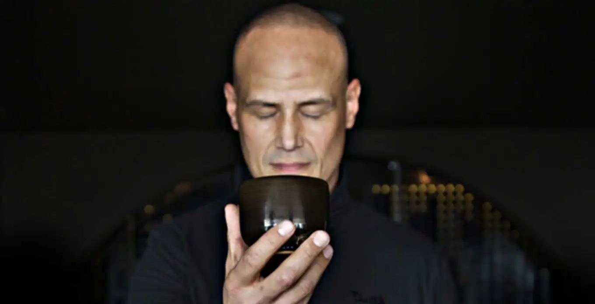

Some Amber Stars
When life gives you a bottle of Gravner Ribolla Anfora 2004, and a bottle of Radikon Ribola 2007, you put aside your game pad and log out from Final Fantasy XIV to gather with your buddies for a small and cozy wine tasting event. Both of the winemakers - Joško Gravner and Stanko Radikon - come from Friuli Collio (also known as Goriška Brda), a historical region located around Gorizia town. Both of them played key role in amber wine renaissance that started in the end of XX century in this exact region divided between Slovenia and Italy. What could possibly accompany these two legendary wines? Of course, some other legendary wines from surrounding regions. Hence, some amber stars:
- Cantina Alchemica Lanthano Bianco 2013
- Kmetija Štekar Rebula Prilo 2015
- La Stoppa Ageno 2015
- Radikon Ribolla 2007
- Gravner Ribolla Anfora 2004

Results
| amean | rms | sdev | favourite | price | QPR | |
|---|---|---|---|---|---|---|
| Wine #1 | 4.21 | 4.22 | 0.0454 | 2.00 | 1890.00 | 1.7537 |
| Wine #2 | 4.17 | 4.17 | 0.0622 | 1.00 | 1050.00 | 2.9468 |
| Wine #3 | 4.24 | 4.27 | 0.2358 | 4.00 | 1090.00 | 3.2026 |
| Wine #4 | 4.22 | 4.23 | 0.0528 | 0.00 | 1690.00 | 1.9953 |
| Wine #5 | 4.06 | 4.10 | 0.3847 | 2.00 | 2900.00 | 0.9001 |
How to read this table:
ameanis arithmetic mean (and not ‘amen’), calculated as sum of all scores divided by count of scores for particular wine. It is more useful thantotal, because some wines are not tasted by all participants.rmsis root mean square or quadratic mean. The problem with arithmetic mean is that it is very sensitive to deviations and extreme values in data sets, meaning that even single 5 or 1 might ‘drastically’ affect the score. Without deeper explanation, RMS is picked because it is bigger than or equal to average, because it basically includes standard deviation.sdevis standard deviation. The bigger this value the more controversial the wine is, meaning that people have different opinions on this one.favouriteis amount of people who marked this wine as favourite of the event.outcastis amount of people who marked this wine as outcast of the event.priceis wine price in UAH.QPRis quality price ratio, calculated in as100 * factorial(rms)/price. The reason behind this totally unprofessional formula is simple. At some point you have to pay more and more to get a little fraction of satisfaction. Factorial used in this formula rewards scores close to the upper bound 120 times more than scores close to the lower bound.
Wines
Cantina Alchemica Lanthano Bianco 2013

A great wine realizes the taste of an experience not an experience of taste.
- producer: Cantina Alchemica (Giorgio Mercandelli)
- name: Lanthano Bianco
- vintage: 2013
- grapes: Field Blend
- location: Lombardia, Oltrepò Pavese
- maceration: around 120 days
- sugar: 1.0
- alcohol: 13.5
- price: 1890 UAH
Made of field blend, spontaneous fermentation with indigenous yeasts in ATLAC resin vats (!) with long maceration on the skins for around 120 days. Giorgio Mercandelli releases his wines only when he thinks that they are ready for that. And it usually takes for around 5-7 years of ageing before he is happy with result.
Kmetija Štekar Rebula Prilo 2015
- producer: Kmetija Štekar (Janko Štekar)
- name: Rebula Prilo
- vintage: 2015
- grapes: Ribolla Gialla
- location: Goriška Brda
- maceration: 26 days
- ageing: around 6 years in acacia barrels
- sugar: 3.9
- alcohol: 12.5
- price: 1050 UAH
Wine making in Slovenia was constrained by communist government and was in a bad shape until 1991 when Slovenia become independent. Put aside love for nationalization and suppression of individuality. Many farmers had vineyards located in Jugoslavija and Italy at the same time, because historical region around Oslavia was divided between different countries over the years. Sounds painfully familiar to many of us. Nevertheless, passionate winemakers did exchange their knowledge and experience over the border and some people were experimenting with amber wines even in 1988.
Janko Štekar is ‘young’ generation of macerated wine makers. He owns 5 ha of vineyards in Goriška Brda that are located on steep slopes, at an altitude of 180 m, with S and SW exposure. Janko Štekar uses cherry, acacia and chestnut instead of oak for vinification and tries to find the best combination of material and size for each wine he produces.
As many producers in Brda, Janko Štekar has a hotel that you can visit. And taste some wonderful wines together with their maker.
La Stoppa Ageno 2015
- producer: La Stoppa
- name: Ageno
- vintage: 2015
- grapes: Malvasia di Candia Aromatica (90%), Ortrugo & Trebbiano (10%)
- age of vines: 20 years
- location: Emilia-Romagna
- maceration: around 120 days
- sugar: 0
- alcohol: 13
- price: 1090 UAH (when it was available)
La Stoppa is a legendary historic estate that was founded in 19th century by a lawyer named Giancarlo Ageno. Initially focused on Bordeaux varieties, nowadays its vineyards are occupied by local Barbera, Bonarda and Malvasia. Elena Pantaleoni, current owner of the estate, works closely with famous enologist Giulio Armani (that has his own side project called Denavolo) to craft wines expressive of place and grape. They are advocates of minimal intervention along with usage of huge Slavonian oak botti and used French barriques. Also they are farming organically since 1990’s and in 2008 they even acquired proper certification.
So our protagonist was named after founder of La Stoppa and made in collaboration with Giulio Armani. 2015 vintage is rare and considered to be legendary among Kyiv amber wine connoisseurs.
Note. The image displays 2019 vintage. 2015 has different design.
Radikon Ribolla 2007
- producer: Radikon
- name: Ribolla
- vintage: 2007
- grapes: Ribolla Gialla
- vines: 2 hectares of 30 years old vines (average, many much older)
- location: Oslavia
- maceration: around 3 months
- ageing: 4 years in 25/35 hl Slavonian casks on lees
- alcohol: 13
- sugar: 3.2
- price: 1690 UAH
Stanko Radikon is a legendary farmer and winemaker from a legendary region. He and his friends started period of renaissance for amber wines - white wines with extended skin maceration. But of course, in town of Oslavia it was called “Slovenian” or “Friuli” style - hand-harvesting, skin contact, large and older barrel fermentation without any temperature control, no added yeasts or enzymes, and little to no use of sulfur.
The vineyards were originally planted in the beginning of XX century by Stanko’s grandfather Franz Mikulus with the local favorite, the Ribolla Gialla grape. And basically, Stanko went back to the ways his grandfather was producing wines back in 30s.
After Stanko passing away in 2016, his son Saša took the winery in his hands. Though people say that nothing has really changed in the philosophy of Radikon winery as Saša has been helping out since he was a kid and a partner since 2006.
On bottle size. Stanko Radikon and Edi Kante were not happy about bottles of regular 0.75l volume. It’s not enough for two people and too much for one person. That’s why they designed bottles and corks of alternative size - 0.5l and 1.0l with corks that imitate wine to oxygen proportion of magnum bottles. First release that saw new bottles is 2002. Edi Kante likes to joke that 1.0l bottle is ideal for two people when only one is drinking.
On ranges. You might have noticed that some wines made by Radikon have blue label and some have purple label. In short, blue label is their ‘traditional’ and top-tier wines. This range started by Stanko himself and is now continued by his son Saša. The purple label is officially called S range (or Saša wines) and was crated by Saša to branch out a bit on his own and to produce entry level wines. They see a noticeably shorter maceration, 8 to 14 days versus 3 months. They are also ferment and age in smaller vessels and age for only 18 months before bottling. And yes, they are bottled in traditional 750ml bottles.
Gravner Ribolla Anfora 2004
I make wines for myself. What’s left — I sell.
- producer: Gravner
- name: Ribolla Anfora
- vintage: 2004
- grapes: Ribolla Gialla
- location: Oslavia
- maceration: around 6 months
- ageing: 5 months in qvevri, 6 years in big Slavonian casks (20-50 hl)
- alcohol: 12.5
- sugar: 3
- price: 2900 UAH
Many consider Joško Gravner to be the father of macerated white wine trend. Yet it’s interesting that before his first amber wine, he was a rising star in the modern and technological winemaking scene. He confessed that he would purchase any new equipment he could find. But his life turned upside down after a trip to California back in 1987. California was (and maybe still) a destination for many winemakers as this region represents triumph and possibilities of new. No wonder, as Californian wines won Judgement of Paris in 1976. This event dramatically changed the wine world. Joško Gravner was taking the same path as Californian winemakers - oak, science, additives and all that cool stuff. But after tasting 1000 wines in 10 days, he was astonished by faceless and tasteless results. And he realised - this is the road to a dead end. Now he knew how not to produce wines.
His search lasted for almost a decade. Joško Gravner studied the history of winemaking and searched for a way to produce authentic wines that talk in the language of land and history. He discovered that his ancestors made skin contact wines here in Collio/Brda. And then, he learned that Georgia has a very long history of winemaking spanning over 8000 years. And more importantly, this history includes skin-contact wines.
Equipped with knowledge and determination to make a change, Joško Gravner worked hard on his first release of extensively macerated Ribolla. It took three years for the 1997 vintage to become ready for release. But unfortunately, consumers were not happy about this drastic change in style. And most importantly, Gambero Rosso, an influential wine & food magazine, gave a devastating assessment of this new style. As a result, 80% of the 1997 Ribolla was returned to the winery. Joško Gravner was crushed. But he also realised that this was the way to go.
In the same 2000, Joško Gravner visited Georgia and ordered 11 qvevri. Unfortunately, no one knew how to transport these 1000L ceramic vessels, so 9 of them didn’t survive the trip. Because of this, Joško had to wait one more year before he could start to use qvevri for production. Nowadays, he owns more than 45 of them in total!
Interestingly, Ribolla and Breg (two wines produced by Joško Gravner) had the word ‘Anfora’ printed on the labels of the 2001 vintage. However, they were not 100% fermented in qvevri till 2003. Even more, no qvevri was used for Breg Rosso production till 2005. And in 2007, they decided to remove the word ‘Anfora’ from all labels, as this information became redundant. All their wines were fermented in qvevri now.
And today, wines produced by Joško Gravner are treated as the highest manifestation of skill. Many people consider Ribolla to be the best orange wine in the world.